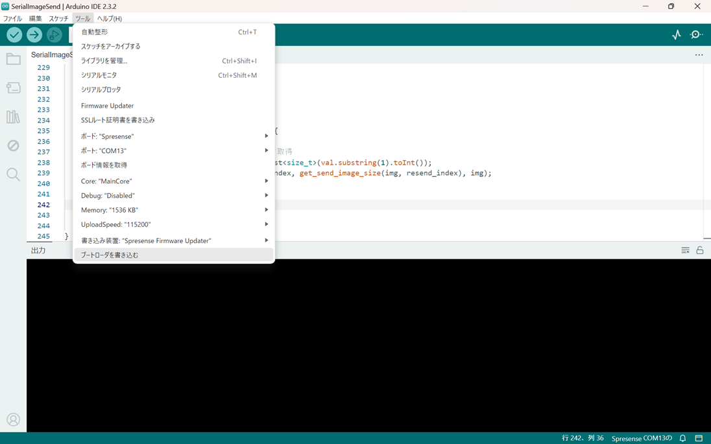

SPRESENSEカメラの設定¶
SPRESENSEカメラを使用するためには、PCを用いて各種設定を書き込む必要があります。
ソフトウェアインストール¶
GitHubからソフトウェアのインストール
はじめにPC上にボード上に書き込むプログラムをダウンロードします。
git clone https://github.com/MinenoLab/PiNode3-SPRESENSE.git
続いて、PCからボードに対して各種設定等を書き込むためのアプリケーションをインストールします。
Arduino IDE¶
Arduino IDEはPCからSPRESENSEに対してプログラムを書き込むためのアプリケーションです。以下のリンクからダウンロードしてください。
上記リンクを開くと下記のようなサイトが開かれます。

サイトの下記項目を実行してください。
1.2 Arduino IDEのinstall
1.3 USBドライバのインストール
1.4 SPRESENSE Arduino board packageのinstall
2.1 USBシリアルポートの接続
2.2 SPRESENSEブートローダーのinstall
サイト内の下記画像位置まで実行できればOKです。

続いてArduino IDE内で使用するライブラリのインストールを行います。
Packetizerのインストール¶
Packetizerはカメラ画像を送信する際に利用するライブラリです。 タブ-ツール/ライブラリに移動し、Packetizerを検索しインストールしてください。

次にSPRESENSE側の各種設定を変更します。 タブ-ツール/Memoryから以下のようにメモリサイズを変更してください。
768KB(default) -> 1536KB

ボード書き込みエラー¶
インストール環境によりpgmspace.hが存在せず、エラーが発生する場合はあります。 エラーの解決のためには以下の手順を実行してください。
以下のリンクからpgmspace.hをダウンロードしてください。
ダウンロードしたpgmspace.hを以下のディレクトリにコピーしてください。
Arduino/libraries/FastFRC/src/pgmspace.h
ボード書き込み¶
以上の設定が完了したら、SPRESENSEにプログラムを書き込みます。
SPRESENSEボードとの接続¶
はじめにPCとSPRESENSEボードをUSBケーブルで接続します。 接続が完了するとArduino IDEのツールバーにポートが表示されます。

ブートローダーの書き込み¶
書き込み対象のSPRESENSEを選択したら以下から書き込みを行います。 タブ-ツール/ブートローダーを書き込む
{kind=link}
下記のようなメッセージが表示されれば成功です。